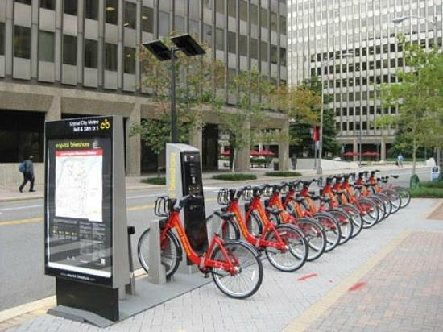

In this project, the AutoGluon library was employed to train multiple models
for the Kaggle Bike Sharing Demand competition. The primary objective was to
rank the models based on their performance in predicting bike rental demand,
considering various features such as season, weather, and temperature. Utilizing
Tabular Prediction, the data from CSV files provided by the competition was effectively
processed. This project serves as a demonstration of my proficiency in utilizing AutoGluon
for tabular prediction tasks. It showcases my ability to iterate through models, optimizing
them to address real-world challenges. The experience gained from this project underscores
my capability to navigate and excel in competitive environments, making it a valuable
addition to my portfolio.
In this AI application development project, I successfully trained an image classifier to recognize
various species of flowers. The goal was to create a versatile model that could be integrated into
different applications, such as a smartphone app capable of identifying flowers captured by the
camera.
The project was executed in several key steps:
Loading and Preprocessing the Image Dataset: I used the torchvision library to load and preprocess
the dataset, applying transformations like random scaling, cropping, and flipping for training. The
images were normalized according to the specifications of the pre-trained models.
Training the Image Classifier: Leveraging pre-trained models from torchvision, I built and trained
a new feed-forward classifier using the features extracted from the images. The classifier utilized
ReLU activations and dropout for improved performance. The training process involved backpropagation
and optimization to achieve the best hyperparameters.
Predicting Image Content: Once the classifier was trained, it could predict the content of images,
specifically identifying different species of flowers. This functionality could be extended to any
set of labeled images, making the model adaptable for various applications.

In this project, I undertook the challenge of refining an image classification
application that lacked crucial Python codes. The primary aim was to assess and
showcase my proficiency in Python programming. By completing the missing code segments,
I systematically evaluated three CNN architectures—AlexNet, VGG, and ResNet—for their
effectiveness in classifying images as "dogs" or "not dogs." Furthermore, I thoroughly
examined the accuracy of the chosen architecture in identifying specific dog breeds.
In this project, I conducted preprocessing on the MNIST dataset for recognizing
handwritten digits, constructed a neural network, and subsequently trained and
refined the model. The primary aim was to attain superior accuracy in identifying
handwritten digits. The project encompassed multiple phases, including data
preprocessing, defining the model architecture, conducting training, evaluation,
and optimization. The resulting model achieved an impressive test accuracy of 97%.
In this project, I applied my skills in Convolutional Neural Networks (CNN) to build
a landmark classifier. The goal was to predict the location of images based on landmarks
depicted in them, addressing challenges where photos lack location metadata. The project
involved end-to-end machine learning processes, including data preprocessing, CNN design
and training, model comparison, and app deployment.
In this project, I constructed an image classification model using AWS SageMaker with the
goal of refining the logistics for a company specializing in scone delivery. The model's
purpose was to autonomously identify the specific type of vehicle employed by delivery
drivers. This classification holds significant importance in streamlining routing processes,
ensuring that orders in close proximity are assigned to bicycle-riding delivery professionals,
while more distant deliveries are entrusted to motorcyclists.
Technologies and Skills Demonstrated:
AWS Sagemaker
AWS Lambda Functions
AWS Step Functions
Computer Vision for Image Classification
Model Training and Deployment
Event-Driven Application Architecture
Scalable and Safe Machine Learning Practices